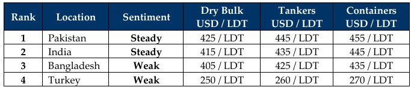

inWeekly Demolition Reports04/08/2025

As the shipping and ship-recycling worlds seemingly collide going down a rabbit hole of this thoughtlessly induced global economicturmoil bought on by a blind surgeon, we can undoubtedly expect to see further issues arising in the coming weeks (unless immediate countermeasures aren’t enacted) as president “two weeks” finally approved a wave of tariffs (infamously declared on April 4th as Liberation Day) against U.S. imports from dozens of countries, including Canada, Taiwan, India, and surprisingly, even Russia as in a show of force against Putin’s unrelenting and truly unabated aggression in Ukraine, this week Trump reportedly instructed CentCom to strategically re-position two nuclear submarines at undisclosed locations off of Russian shores. This move, in addition to the sanctioning of not only Russian oil, but also those trading Russian oil, is reportedly expected to see over 1,000 vessels enter the dreaded OFAC list, leaving their futures in disarray.
And the inevitably of his actions is already starting to (sort of) bear fruit for the ship recycling sector as a gradual inflow of tankers into India and bulkers into Pakistan over recent weeks (including this one), has seen fresh arrivals at both locations this week. The Baltic Exchange dry index also reported a 0.75% overall jump brought on by the Cape and Supramax indices that firmed 1.8% and 0.1% respectively this week, all while the Panamax index fell nearly 1% of its total value, an over 10% drop in weekly trading. Unsuspiciously, both wet and small-to-medium size dry units are expected to continue sailing into the Indian sub-continent ship recycling markets through August, given that the sanctions have already seen oil futures in turmoil as they declined an unpopular (well any negative number is unpopular) 2.7% this week, closing it out at USD 67.30/barrel.
Fundamentals at ship recycling destinations also displayed results similar to a darts contest at a blind congregation, all over the board this week (just as they have been over the recent past) despite ‘some’ price stability and even improvements being registered, resulting in a growing collection of fixtures into the sub-continent recycling markets of late – most notably were the two larger LDT LNGs into India and even two bulkers into a resurgent Pakistan, with reports of slow but ongoing improvements to local yards coming forth.
Speaking of, HKC requirements enacted a mere 5 weeks ago have also sent owners, cash buyers, and end buyers into headwinds at the tail end of a vessels life due to the unfolding confusions and ensuing delays during final delivery, though the industry does seem to be collectively (albeit slowly) getting accustomed to the changing documentary requirements and inward procedures prior the vessel’s arrival. As a reminder, IHM parts I, II and III are being required for any vessel heading to any Indian sub-continent ship-recycling destination, along with SRPs (Ship Recycling Plans), SRFPs (Ship Recycling Facility Plans) and even confirmations from flag states that the vessels are headed for recycling. Overall, Bangladesh remains positioned just behind both India and Pakistan (with the number of arrivals at the waterfront to match), as Turkey remains marooned in no man’s land with nothing more than deteriorating fundamentals to report week after week. Is it 2026 yet?
For Week 31 of 2025, GMS Market Rankings / vessel indications are as below.

📄 Download PDF: Ship-recycling-market-insight-Week-31-08-01-2025-Rocky_Moves-1754288317.pdfSource: GMS,Inc.https://www.gmsinc.net/gms_new/index.php/web